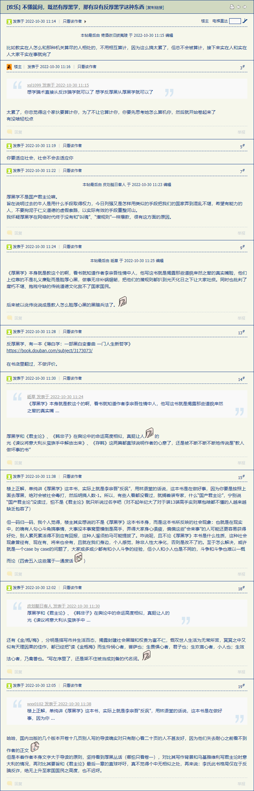
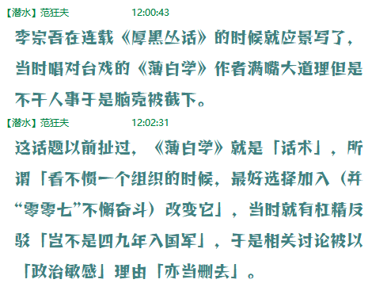
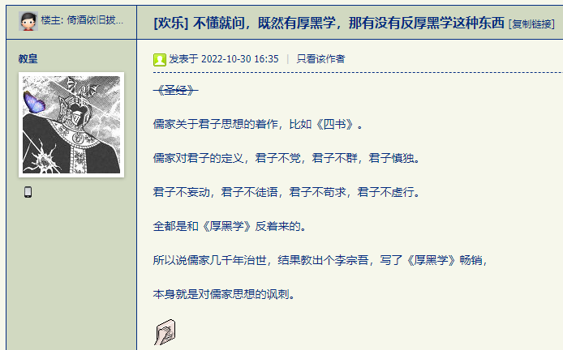
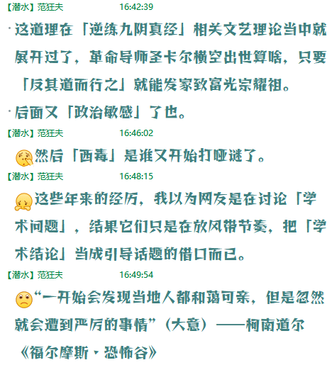
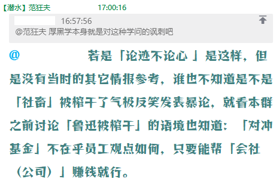
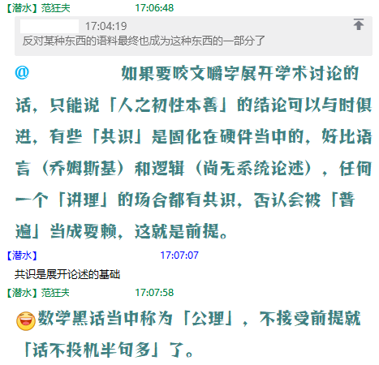
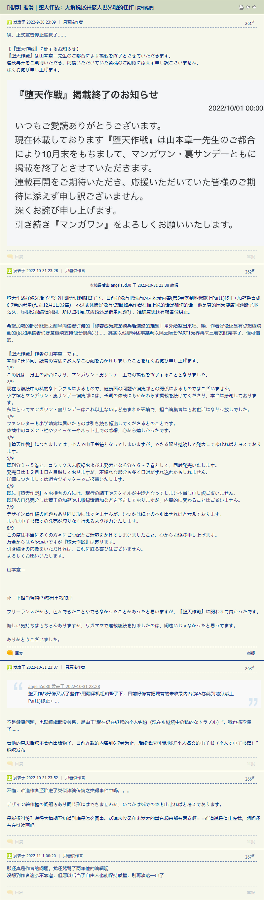
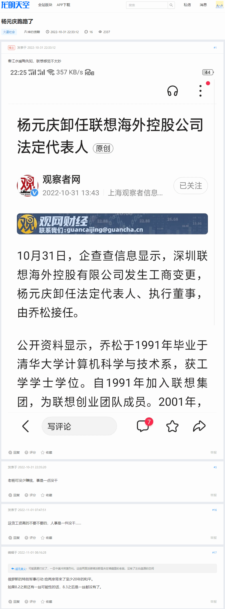

fanhan-inside 2022-10-30T04:42:52Z 长话短说，最近惦记着改版，与时俱进先从字体开始，目前互联网中央的推荐规范是这样的：
之前网上各种教程和科普当中提到的「五大善人通用字体族 」（衬线、无衬线、等宽、花体、艺术字），是2018年最后更新的第三级的规范。而第四级则多了一堆「generic font family」，除了那些带连字符并有「system」「ui」之类字眼的以外，命名比较规范的有三个：「emoji」「math」「fangsong」。
这个「绘文字」不提了，属于追认既存规范，远在本地化显示优先的时候，微软就有「windings」「webdings」专用字体⸺窗口右上方的「最大化/最小化/关闭」按钮的图像，都是字体实现的⸺自从2010年Unicode认证了emoji位面开始，市面上各种专用字体极大充沛。技术上的最新进展是「Color Font」，已经投入实用很久了，规范也已经制定，此处不再展开。
而「数学字体」的实现还很滞后，以前提到过Chromium引擎不支持「MathML」而Mozilla支持的时候就涉及到了，专用字体的指定和映射，在部分大手情报工学会社的内部优先级列表当中排名靠后甚至不在议程当中。于是目前暂且搁置，样式当中指定了就行，显示成啥样先不管了。
最后轮到「仿宋」了，这个「通用字体族」是为了汉字量身定做的。目前在windows上测试正常，是因为操作系统本来就提供仿宋字体「FangSong」，只有可忽略大小写的区别，肯定是能映射到的，其它语种及操作系统环境的情况目前还不知道。
然后就到了刨根问底的时候了，「宋体」形成于明朝又称「明体」⸺日文字体命名直接唤作「明朝」⸺是仿照「宋刻本の匠体字」设计的，适合木质雕版纹理的横细竖粗字体，在铅字印刷时代就有些费墨，何况如今人手一张「视网膜屏」无纸化办公的新时代。于是在1916年当时就有同样仿照宋刻本的新字体出现，主要针对铅字印刷设计，笔画粗细均匀并且末端样式适合铸造，迄今为止一百多年了。
由此而来的尖锐问题见标题，思路广欢乐多的展开见应景出现的文艺理论：
范某截图备份于此


李宗吾在连载《厚黑丛话》的时候就应景写了，当时唱对台戏的《薄白学》作者满嘴大道理但是不干人事于是脑壳被截下。
这话题以前扯过，《薄白学》就是「话术」，所谓「看不惯一个组织的时候，最好选择加入（并“零零七”不懈奋斗）改变它」，当时就有杠精反驳「岂不是四九年入国军」，于是相关讨论被以「政治敏感」理由「亦当删去」。
fanhan-inside 2022-10-30T09:10:09Z
范某截图备份于此




fanhan-inside 2022-11-01T04:12:05Z 补充情报兼素材：
范某截图备份于此


长话短说，由于「内容优先于形式」，码字本身总比排版乃至改版更重要，于是在到处「见贤思齐」的时候，发现了之前曾经关注过的某二次元大作的「后续」。就看道听途说的「结论」，於我心有戚戚焉。
简单对比，我的健康肯定是有问题的，可以参考《“有的人活着，他已经死了；有的人死了，他还活着”》 开头备份的照片。愿意体验第一手材料的「读者」可以先绝食两个月（6月14日－8月21日）于皮包骨的状态下再浮肿两个月（8月25日－今）试一试。现在的情况是已经通过摄入筋头巴脑企图恶补五脏六腑损耗算是按计划「到月底」完成了。至于筋骨皮，大致消肿了，走路不那么费劲了，不过脚脖子还是紫的，脚面还在疼。
而「个人纠纷」当然有，家贼的全套证件连同我的医保卡等证件都不翼而飞，考虑到之前南里住宅那「夜不闭户」状态，对于「路不拾遗」深表怀疑。因为处理后事的时候发现室内混乱，那一大张床板歪歪斜斜架在垃圾上，床腿断裂扔在一边，我自己推开（以便走到墙边）都费劲，何况七十五岁的家贼。不惮以最大的恶意揣测，是江湖好汉草莽豪杰地痞流氓泼皮无赖「上门打砸抢 」的结果。 至于这些武德是否与混迹于古拉格北里的哥布林之间有业务联系，我通过分析个人亲身经历的第一手材料当中的捅妓上的相关性判断，当然有。
至于「版权纠纷」，之前谈笑风生当中提到了，唯一的破绽就是2021年11月2日上午11时许，我喝多了正要睡觉的时候有人民警察登门拜访，以「用家贼自己的工资送其进养老院」的名义，签署了大批文件并且（由于对人民民主专政铁拳的公信力没有怀疑而）没有详细审核。所谓「纠纷」，我自己经手的只可能有这一次，而家贼「代办」的就不知道了。当时对话就有「你爹是不是用你的名义在外面借了好多钱」「确实拿着我的证件说代缴养老金很长时间了不知道还干了啥」。
但是从那时候开始计算也一年了，锤镰帮都换届了，却一直也没有「债主」直接联系，只是在繁荣的简体中文互联网上不停的往我眼皮底下推送各种「认知作战」情报，还通常都与囧斋周边形迹可疑有直接关系。最近一次是「湘西赶尸 」⸺各位见过只有双臂前伸一个动作的广播体操么，但是没跳起来也没蹦着走路⸺回忆网络舆论大概与《“认命可以，躺平不行”（再续）》 前后的氛围相仿。
如果说还有什么唯物主义铁证如山，可以参考《家贼右手食指缺失第一指节》 当中的记述，不惮以最大的恶意揣测，四十年前开始家贼自己的「身份」或曰「游戏账号」就转让了，是自愿的还是被迫的不知道，总之「按指印」以及「（右手残疾后的）笔迹」这两个破绽都可以在人脉的掩护下糊弄过去 。这四十年来家贼「签署」了多少文件，是不是「献了青春献终身，献了终身献子孙」全给卖个精光，有待权威部门鉴定。
其它细节都备份过了，比方说去年11月15日是警车把我送到医院太平间并留下身份证并写委托书让代办后事，费用都是在人民警察的保驾护航之下去银行自助终端取出来的现金，当时除了「后事」之外没有任何其它情报。真要有什么「纠纷」，这一年也该走完全套公检法程序了，还是幕后黑手耐心爆表故意憋着等「换届」之后来个大招？当时其「人脉」是趁手还是不趁手呢？
尤其是这几天的舆论，「鲁迅被榨干论」的氛围比较奇特，除了「鲁迅周作人哥儿俩都在北京被日本艳星榨干」的老生常谈之外，就是「鲁迅自己」在精力枯竭之后写不出小说了，只能通过「与御用反动文人打嘴仗」的方式『骗稿费』？
结合最近日本「文坛」动向，「集英社压榨画手稳准狠」「富坚义博都没有社交媒体账号」「三浦健太郎英年早逝」「荻野真被五指山镇压十年后没死但脱层皮……唔，后来死了」之类老生常谈，角川老板被捉是因为「行贿」的新闻恐怕也有联系。
先就事论事吧，我暂停连载《设定集》是因为与人民警察谈笑风生之后承诺「今后不再对于未经权威机构认证的消息作出超出字面含义的解读 」于是导致计划中部分思路广欢乐多放飞脑洞的线索暂时不能展开，于是精力集中到「权威机构」认证过的那些本位面历史和现实的「共识」当中，也就是「苏修 美帝 尔登场六千五百年来我给人民群众一个说法 」的方向，大批「准备工作」包括但不限于「囧斋范某自作用字」都是为了这个目的。
在这个前提下，如同《异闻录》那样继续深化细节也不是不可能，说过了有意识的收敛线索但更多的线索自发涌现于是剧情反而更发散了。于是还得按照什么业内惯例「大乱斗」，把不同篇目当中甚至本来构思中也没有交集的角色强行扯到一起。
那么，空口无凭，此处先举一例，就是《设定集》第八篇〈金玉锦绣珠光宝气〉 当中法比奥说「从佛罗伦萨坐船直接就到了安特卫普 」的这句，可以当成「番外」展开吧？
卡壳世界The Kock World ・作文composition “长风破浪会有时，直挂云帆济沧海”，范翗翷念了两句诗，站在船头，前腿弓后腿绷，右手伸出食中二指并在一起，向前方一指，“走你！”
“哪儿来的行为艺术家？”站在舰桥边扶着栏杆等待启航的法比奥看着船头范翗翷的奇怪举动，嘴里嘟囔。这时忽然风大了，并且越来越大，法比奥看着船只离港，再看船头，“真能碰瓷。”
开头是这样，读者可以当成二次元大作当中司空见惯的「回忆杀」「嘴炮遁」之类常见灌水理解吧。
fanhan-inside 2022-11-03T04:04:32Z 简单补充说明几句。
在本篇讨论发表当时，就发现「W3C」被墙了⸺墙它有何意义？虽然墙内戏称「小中华局域网」但是有关部门横下一条心自绝于「互联网」真的好么？⸺开头提供的链接打不开，于是「从“仿宋”（CSS Fonts Module Level 4）说起 」的计划暂停。当然相应的改版工作也就见缝插针通过其它间接参考资料来源进行。
然后是「测试（体验）烟酒的阶段性感想 」。虽然已经明确表示「这一次可不是由于开心才抽烟喝酒啥都吃的」，但是三省自身之后发现潜意识⸺已经写进日记明确表达出来了就是显意识⸺当中还是企图「找回状态」，虽然希望是去年七月初《设定集》连载暂停当时的状态，但不太可能，至少是今年六月初「建站改版总结脑洞整理素材」的状态。
细节不提了，不会打广告⸺也说过了有些细节在《设定集》当中是进行时（于是需要体验并揣摩相关场景）但在《异闻录》当中是完成时所以没必要在现实中推销什么⸺只说大道理。
对于烟草制品来说，尼古丁和焦油（及烟气烟碱）之间存在着「平衡」：
尼古丁含量高而焦油含量低（口感清淡“全嘬唾沫了”）会导致为了「“口感”带来的生理反应所导致的心理满足感」而抽得更频繁；
尼古丁低而焦油高则反之（觉得“劲大”呛得慌就少抽点）；
都低的话则是商家希望的那样「销量稳步上涨」。
至于卷烟规格，也是老生常谈，无论「粗短」「细长」都与通用尺寸相比净含量少了一半，类似「细口小瓶子番茄酱卖得更多」那种鸡汤文炒作的「商家理念」一样。相比之下，自带过滤嘴的「雪茄」（其中包括用烟叶色牛皮纸卷烟丝的伪・雪茄）要按照卷烟的数据那么处理 ，「烟草直接制品」再考虑其它各种因素：尺寸过大净含量过高导致「普通烟民」只抽半支；「老烟枪」抽到烧嘴都不过瘾会使用外置烟嘴企图多抽几口 ……总而言之还是为了「销量」也就是赚钱。
于是「电子烟」设备与「液态烟草」耗材对于市场的切入点估计就是这么来的，把可数名词变成不可数 ，可以「按需摄入」还能「定量分析」。
酒精也一样，其实在线索《以德治啤酒与依法治面包》 当中已经展开过了，其中最后提到的「自制“ハイ”」的部分，这几天正在体验，当然手头能买到的纯柠檬/青柠汁没有，用果汁饮料凑合。相关细节早就出现在剧情当中：
卡壳世界The Kock World ・作文composition “只有焼酎しょうちゅ ，可以兑果汁，雷蒙レモン 或莱姆ライム ”，茨维特科表现得像是普通店员，“限定版还能充沛碳酸气”。
“季节限定？”瑟雷萨追问。
“帮厨限定”，范翗翷插嘴，“我在的时候才有”。
⸺《范版西幻设定集》之二十〈新长征路上的摇滚〉
码字当时是根据回忆揣摩场景，因为当时虽然健康已经开始每况愈下但还认为「今后细化内容的时候肯定还能体验」就略过了，最近由于「（我）没有时间」而重新体验而已。
这个情节正如上述「法比奥乘船」那句话一样，同样可以展开为「番外」，无论是不是「美食向」都可以，因为随后就出现了「这酒好生有气力」的关键⸺酒精也是重要的医疗耗材是吧 ⸺都是为了主线「黑死病v2.0」准备的伏笔。
码字写到这条暗线的时候是「2019.6.24 - 7.10」，被舆论暗示甚至明示为全球遭瘟导火索的九省通衢军事运动会还没召开呢，是根据个人亲身经历的「非典」构思的。后来的发展难道说幕后黑手「抄袭剽窃借鉴」我不成？除非囧斋周边混混放话「全球遭瘟全城戒严就是给你小子一个人预备的」不是吹牛哔而是真正的阴谋诡计的一环。
再往后又是「牢骚」了，此处简单回顾并解读：
2019年10月初，家贼破门而入「阅兵式你看了没有？咱国家今非昔比啦」⸺一个字都没提到「党」⸺这是「四九年2019年 入国军？」
没过几天，家贼再次破门而入「你有身份证么？」⸺权威机构认证我不但有身份证还特意护送我持身份证给家贼办后事呢⸺这是「就你小子这素质连“（满世界抓壮丁的）国军”都不要？」
结合后来局势发展⸺世界卫生组织的「COVID-19」命名说明了一切⸺各位读者设身处地的揣摩其「场景」，就是我所经历的这些戏剧性情节，还能有其它什么感想？
于是后来在连载《异闻录》实时影射的同时，继续深化《设定集》构思嘛。到第一辑收尾的时候，当然需要围绕已经成为现实的「剧透」安插线索了：作为医疗耗材的酒精，就是注定会出现，还有重要戏份呢。
顺便备份「鲁迅被榨干」的线索。众所周知「二周失和」的历史，「日本艳星」羽太信子的作用有充沛的经由权威机构认证的档案记载，这里不再重复。之前每次涉及「在上海日租界与日本朋友谈笑风生的鲁迅若是没死肯定会当带路党」之类老生常谈的时候，都有「鲁迅都和他弟闹崩了，娶了日本老婆的弟弟出任伪职，从家务事角度出发也知道鲁迅肯定不会当汉奸」这种反驳，似乎有一定的说服力。
反正历史不能假设，鲁迅「死得早」是事实，但是否「死得巧」就众说纷纭了也。